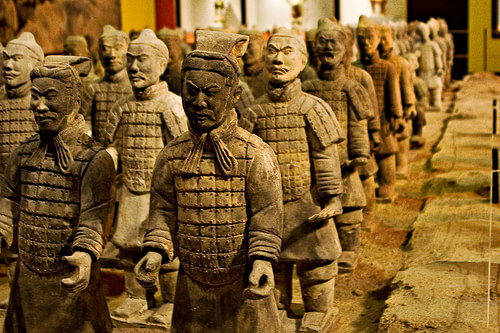
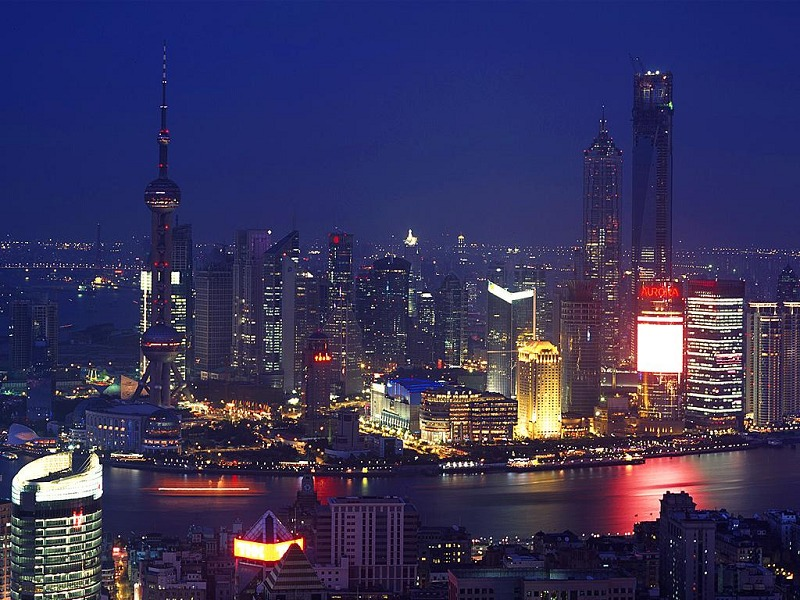
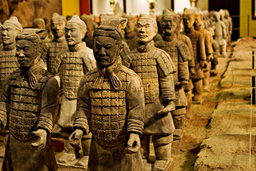
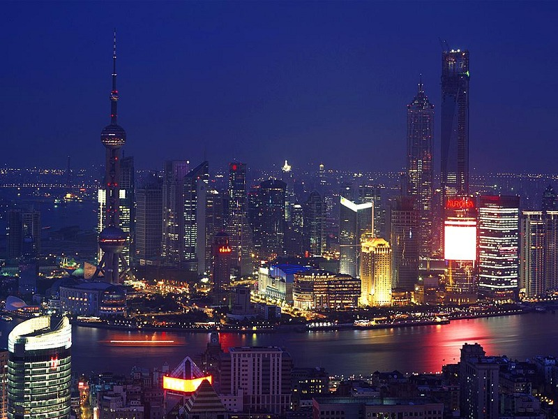

Bandera

La capital de China es Pekín, conocida por su gran historia y sus monumentos como la Ciudad Prohibida y la Plaza de Tiananmen.
El idioma oficial de China es el chino mandarín, que es el más hablado en el mundo.
La moneda oficial de China es el yuan renminbi (CNY), abreviado como RMB.
China es el país más poblado del mundo, con más de 1.400 millones de habitantes.
China es una república socialista, gobernada por el Partido Comunista Chino. Su estructura política es de partido único.
China tiene una rica herencia cultural y paisajes impresionantes. Algunos de los sitios turísticos más destacados son la Gran Muralla China, el Ejército de Terracota en Xi'an, y la ciudad de Shanghai, un símbolo de modernidad.
 



La gastronomía china es muy diversa. Algunos platos icónicos incluyen el arroz frito, el pollo kung pao, el pato pekinés y los dumplings o empanadillas chinas.
China tiene una rica tradición cultural, con danzas como la Danza del Dragón y la Danza del León, que son comunes en festivales. La música tradicional china destaca por el uso de instrumentos como el erhu y la pipa.